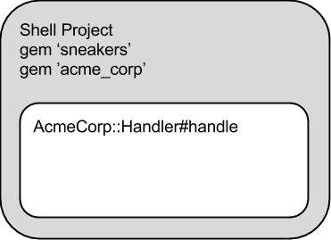

Modular Workers for Easier Testing and Development
 Dotan Nahum, Dec 4
Dotan Nahum, Dec 4
A background worker in the Ruby world can find its place either assiting a Rails stack, or having a life of its own.
I argue that in either case, giving a worker a life of its own will be highly productive in the long run. Having the worker modeled as a stand-alone library or a gem, a module if you will, is even more productive.
What's a Modular Worker?
Simply put, a modular worker is a worker that is a library or a project of its own. You can export it to a gem and then depend on it, and in turn, it can declare what it depends on - like any other software project.
A modular worker is a first-class software project, that can be iterated upon independently and quickly.

One strategy of creating a modular worker architecture is to extract all your worker code into 2 projects.
- Shell worker project
- Actual worker logic project
Illustrated above - is a shell project, where you wire up your worker logic against an actual worker logic project. Within such a shell project, you would set up:
- Deployment
- Runner strategy (foreman/upstart/runit, supporting scripts)
- Supporting configuration - logging, monitoring
- Integration tests and harnesses with real data
- Dependency and wiring up of the worker into the actual logic code that is
AcmeCorp::Handler
This frees the core AcmeCorp::Handler project to be:
- Ignorant of "operational" concerns, with less operational dependencies
- A simple Ruby project, familiar to any developer
- Rapidly developed and tested - you pick your workflow
- A composable gem, that is fully versioned
With this layout, 90% of the time - you'll be maintaining the actual logic of handling messages, while being assured that other concerns like deployment, integration tests, etc. are just taking 10% of your time and can also be maintained by other non-domain relevant members of the team (devops?).
To recap, now you'll be treating workers like so:
- Worker Shell aspects - deployment, monitoring etc. are a repo, and a gem, maintained separately.
- Business aspects - logic, message handling etc. are a repo, and a gem, maintained separately.
- The shell can be reused.
- The whole system is a set of gems, like any other project.
- The whole system is released and versioned as a first-class software product.
Sneakers Does Modular Workers by Default
Using Sneakers, you're already doing this without noticing. If you'll take a look at Sneakers' test suite, you'll find that testing is easy and simple, and that workers are modular enough that you can pack any of them into gems easily.
In fact I mostly start a Sneakers worker project by doing a bundle gem my_worker and then including Sneakers into the gemspec.
Sneakers packs the shell and logic aspects as a singular project, which is good for most if not all use cases. You can include your operational concerns within it, as well as your message handling logic - no harm done.
If you find you need that extra-degree of separation, Sneakers makes it very easy to take apart your worker project into 2 separate projects as discussed above.
Testing
Testing a system which depends on a real queue can be nasty (much like testing against a real database).
However with this layout it becomes easy and manageable:
- Unit testing, simple - because
AcmeCorp::Handleris a simple Ruby project. - Integration testing / acceptance testing - focused within the Shell Project, you can do all of the typical 'dirty' test-harness tricks there.
The Price: Modular Messaging
Getting these immense gains from such an architecture, comes at a price of making sure the architecture supports modular messaging.
Plainly spoken, you will need to be sure a message is self-contained which means you can't just send off an ID of an item in the database; you'll have to send off the entire object.